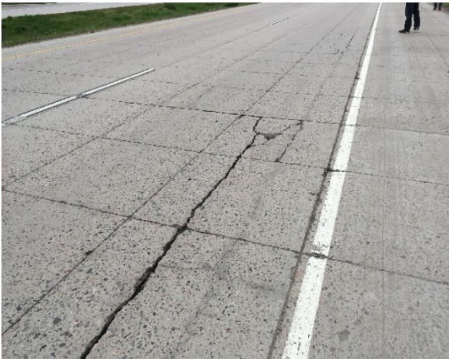
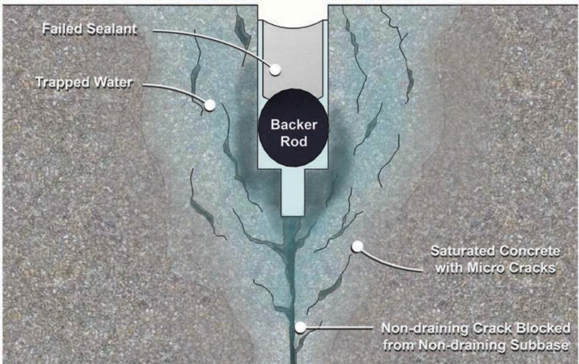

Pavement Distress Analysis
Pavement Distress Analysis is a systematic field evaluation that records every visible defect or form of deterioration on the surface of a pavement—such as cracks, spalling, joint damage and visual signs of poor drainage—to document its current condition [2] [3]. The survey quantifies each distress by type, severity and amount, groups areas with similar performance, and uses the observed form‑location relationship to infer the probable mechanism (structural or functional) that produced it [2] [3]. By providing this factual record, the analysis supports engineers in selecting appropriate preservation, rehabilitation, or other treatment actions and serves as the first step in a broader pavement performance assessment [1] [3].
Sources (3)
Purpose and investigation objectives
Pavement Distress Analysis evaluates the condition of a pavement by recording any visible defects or forms of deterioration on its surface—“Pavement distress is any visible defect or form of deterioration on the surface of a pavement”—including cracks, spalling, joint damage and visual signs of poor drainage caused by excess moisture in the structure. The field survey documents the types, quantities and severities of each distress, groups areas with similar performance, verifies wheel‑path interactions with longitudinal joints, and determines whether the underlying cause is structural or functional. The investigation must answer two overarching questions: (1) What is the probable mechanism that produced each distress, as inferred from its form and location—“Distress and condition surveys often reveal the probable mechanism of the distress by its form and location”; and (2) Which preservation, rehabilitation or other treatment actions are appropriate—“assist in the identification of appropriate preservation or rehabilitation solutions”. [2][3]
[2] — Ch. 4 (p. 101), Ch. 18 (p. 357); [3] — Ch. 3 (pp. 36–38)
The survey quantifies distress at roughly 175 unrepaired spalling areas and cracks per mile—about one mid‑panel crack per slab—and notes low‑ to moderate‑severity concrete durability problems with D‑type cracking, indicating that maintenance planners must budget for routine crack sealing and monitor durability. Because severe spalling is identified, designers can plan to fill those locations with asphalt material, while the recommendation for widespread repairs of centerline and transverse joints defines the scope of rehabilitation work and informs overlay thickness decisions. Following the pavement distress survey in which transverse and diagonal cracking are identified and recorded, some follow‑up field testing may be needed to help determine possible causes of the distress and assist in the identification of appropriate preservation or rehabilitation solutions. Document pavement condition. Identify types, quantities, and severities of distress observed distress. Gain insight into causes of deterioration (e.g., structural vs. functional). Identify potential treatment alternatives. [1][2][3]
The following figure illustrates common spalling at joints and cracks.
 Severe longitudinal joint spalling on a concrete pavement surface. [2]
Severe longitudinal joint spalling on a concrete pavement surface. [2]
The image displays a close-up view of a paved road featuring a prominent vertical crack running longitudinally along the centerline, separating two lanes. The edges of this joint exhibit significant deterioration characterized by chipping and crumbling concrete fragments scattered on the surface.
[1] — 1. Introduction (p. 47); [2] — Ch. 4 (p. 101); [3] — Ch. 3 (pp. 36–38)
Scope and applicability
The guides indicate that Pavement Distress Analysis is applied to concrete pavements—including those with unbonded concrete overlays—when surface symptoms are present. It is suitable for low‑to‑moderate‑severity durability problems such as “D” cracking along transverse and longitudinal joints, spalling areas, deteriorated transverse joints, and any visible defect (crack, spall, joint deterioration). The method is typically invoked when unrepaired spalling or cracks reach about 175 per mile (≈ one mid‑panel crack per slab) and when transverse panel cracks are observed, especially if a transverse panel crack aligns with a crack in an adjacent asphalt shoulder. Surveys are used to “verify wheel paths relative to longitudinal joint locations” and to infer the probable mechanism of distress from its form and location. The analysis is performed at the project level as the first step in pavement evaluation, documenting type, severity and amount of each distress across all structural layers that manifest surface symptoms. Site conditions such as excess moisture or poor drainage—identified through visual signs—are also recorded because they influence preservation treatment effectiveness. [1][2][3]
The following figure illustrates fractured aggregate within a D-cracked pavement.
 Microscopic view of fractured aggregate in D-cracked pavement [2]
Microscopic view of fractured aggregate in D-cracked pavement [2]
The image displays a cross-section of concrete containing various aggregates embedded within the cement matrix. A large, light-colored aggregate particle in the lower right exhibits internal fracturing and cracking.
[1] — 1. Introduction (p. 47); [2] — Ch. 18 (pp. 411–442); [3] — Ch. 3 (pp. 36–38)
Pavement distress surveys are limited to documenting only the visible defects on the surface, so they cannot alone reveal subsurface problems such as moisture intrusion or structural weakness; when visual signs of poor drainage appear or when the underlying cause of deterioration is unclear, additional investigations—such as material sampling, nondestructive deflection testing, or a dedicated drainage survey—should be employed to supplement the distress data and ensure preservation treatments will be effective. [3]
The figure below illustrates potential subbase deterioration associated with concrete pavement structural distress.
 Cross-section of a concrete pavement showing subbase disintegration and pumping associated with structural distress. [3]
Cross-section of a concrete pavement showing subbase disintegration and pumping associated with structural distress. [3]
The figure displays a block diagram of a rigid pavement structure, revealing distinct layers including the surface slab, a granular subbase layer containing circular aggregates, and underlying foundation soil. Visual evidence within the diagram indicates severe deterioration in the lower layers, specifically labeled as “Subbase Disintegrated” where the material appears broken down into irregular fragments beneath a fractured slab section.
[3] — Ch. 3 (pp. 36–38)
Existing information and records
The analysis should begin by reviewing all existing distress‑survey records for the section. These surveys quantify the extent of unrepaired spalling, deteriorated transverse joints and cracking—approximately 175 per mile, which corresponds to roughly one mid‑panel crack per slab. They also document low‑ to moderate‑severity concrete durability problems, specifically “D” cracking along both transverse and longitudinal joints, as well as low‑severity fatigue cracking and rutting observed along wheelpaths and moderate longitudinal/transverse cracking throughout the pavement. In addition, observations of stripping and debonding of the upper layers from coring should be incorporated. Finally, the AASHTO soil classification (A‑7‑5) from the accompanying soil survey must be examined to understand subgrade influences on performance. [1]
[1] — 1. Introduction (pp. 47–53)
“Distress and condition surveys often reveal the probable mechanism of the distress by its form and location,” yet the existing documentation frequently omits how wheel paths intersect longitudinal joints and does not record the precise form‑location relationship needed to identify the underlying cause. This leaves uncertainty about whether observed cracking—such as transverse panel cracks that line up with adjacent shoulder cracks—is due to joint traffic loading or another mechanism. “Field site visits are also an opportunity to verify wheel paths relative to longitudinal joint locations,” so field investigations must confirm wheel‑path geometry, capture exact crack patterns, and clarify the cause‑effect relationship of each distress. [2]
The figure below illustrates examples of this distress, showing multiple instances of longitudinal cracking within wheel paths.

Longitudinal cracking in wheel path [2]The image displays a concrete pavement surface characterized by a prominent, continuous longitudinal crack running parallel to the white shoulder line.
[2] — Ch. 18 (pp. 357–442)
Visual inspection and condition assessment
The guides advise that a pavement‑distress analysis systematically document all visible concrete defects and surface deteriorations. Inspectors should record spalling areas, deteriorated transverse joints, and the range of cracking patterns—including mid‑panel cracks, “D” type cracks that follow both transverse and longitudinal joint lines, transverse and diagonal cracks, and moderate longitudinal or transverse cracks—because these indicate low‑ to moderate‑severity durability problems. Low‑severity fatigue cracking and rutting in wheelpaths must also be noted, as well as any material degradation such as stripping of the binder and debonding of upper layers observed during coring. Field site visits should verify wheel‑path alignment with longitudinal joints to detect joint‑related faulting or other joint deterioration. By capturing these observable defects—cracks of various orientations, spalling, joint distress, rutting, fatigue cracking, stripping, and debonding—analysts can infer the underlying mechanisms and prioritize preservation actions. [1][2]
The following figure illustrates how these distress patterns typically manifest as crescent-shaped cracks accompanied by characteristic dark staining.
 Staining accompanying D-cracking at joints [2]
Staining accompanying D-cracking at joints [2]
The image displays a concrete pavement surface featuring a transverse joint marked by a yellow line, where the concrete is fractured in a crescent shape radiating from the corner.
[1] — 1. Introduction (pp. 47–53); [2] — Ch. 4 (p. 101), Ch. 18 (pp. 411–442)
Pavement distress surveys classify each observed defect first by its type—identified from the mechanism and appearance—and then by severity, which reflects how critical or progressive the defect is. The quantity (extent) of each type‑severity combination is measured in a convenient unit such as linear feet or area and recorded for the specific location on the pavement surface where it occurs. A standardized distress identification manual guides field raters to consistently document the condition, type, severity, amount, and exact position of every visible defect. [3]
The following figure illustrates an example project strip chart used to visualize these recorded distress data.
 Example project strip chart showing the distribution of concrete slab cracking severity along a pavement section. [3]
Example project strip chart showing the distribution of concrete slab cracking severity along a pavement section. [3]
The figure displays a strip chart that plots the percentage of cracked slabs against the distance along the project, serving as a visual summary of distress occurrence over the length of the pavement.
[3] — Ch. 3 (pp. 36–38)
Field measurements and testing
Field evaluation for pavement distress begins with a visual distress survey that records every visible defect and classifies each by type, severity and amount, providing the basic measure of condition. Complementary nondestructive tests such as deflection testing are used to gauge structural response and moisture‑related weakness, while roughness measurements assess ride quality and surface‑friction tests indicate skid resistance. Material sampling is noted in the field to link observed distress with underlying material properties, and together these observations and nondestructive measurements give insight into causes of deterioration and guide treatment decisions. [3]
[3] — Ch. 3 (pp. 36–38)
Structural and functional performance
Pavement distress analysis incorporates a suite of field measurements: deflection testing is used to assess structural capacity, while roughness and surface‑friction testing evaluate functional condition; material sampling and laboratory testing provide information on layer thickness and other material properties that support the interpretation of observed distresses. [3]
[3] — Ch. 3 (pp. 36–38)
Data interpretation and diagnosis
Pavement distress analysis begins with a systematic visual survey that records each defect’s type, severity and amount, thereby documenting pavement condition and providing the basis for grouping similar performance areas. The observed distresses guide the selection of additional field measurements—such as deflection or drainage checks—and trigger material sampling for laboratory testing; the combined data are then interpreted together to infer whether deterioration is structural or functional and to define appropriate preservation treatments. Using a standardized distress identification manual ensures consistent interpretation across visual, measured, and lab information, increasing confidence in performance assessments. [3]
[3] — Ch. 3 (pp. 36–38)
The survey highlights that excess moisture in the pavement structure is a major contributor to many observed distresses, indicating inadequate drainage as a likely cause; visual signs of poor drainage coupled with material sampling and deflection testing further suggest underlying structural issues that must be addressed before preservation treatments can succeed. [3]
[3] — Ch. 3 (pp. 36–38)
Findings, confidence, and next actions
The combined guidance indicates that a pavement distress survey provides a factual record of existing surface defects, quantifies their type and severity, and enables engineers to infer likely mechanisms and select appropriate preservation or rehabilitation actions. The surveys consistently document high densities of spalling, joint deterioration, and cracking—e.g., “Estimated number of unrepaired spalling areas, deteriorated transverse joints, and cracks: 175 per mile, i.e., 1 mid‑panel crack per slab.”—and note that such defects are generally low to moderate in severity with some severe spalling earmarked for repair by asphalt filling. By linking distress form and location, the surveys can “reveal the probable mechanism of the distress by its form and location,” allowing verification of wheel‑path alignment with longitudinal joints during field visits. Consequently, engineers can group sections with similar performance, estimate repair quantities, and prioritize treatments such as joint rehabilitation or crack sealing.
However, the guidance also stresses that these conclusions are limited to what is observable on the surface. Visual inspection “does not reveal why those cracks formed,” and the surveys lack quantified measurements, confidence intervals, or performance thresholds; they rely on qualitative notes without measured crack dimensions or rut depths. Hidden subsurface problems—moisture intrusion, structural deficiencies, poor drainage—cannot be captured solely by visual observation, so additional material sampling, deflection testing, or drainage assessments are required to reduce uncertainty about underlying causes and the ultimate effectiveness of prescribed treatments. [1][2][3]
The following figure illustrates how such subsurface issues manifest as visible distress on the surface.

Cross-section of a concrete pavement joint showing trapped water and micro-cracking caused by failed sealant, backer rod placement, and non-draining subbase. [2]The figure displays a cross-sectional view of a concrete pavement joint containing a black circular backer rod surrounded by lighter gray material representing the joint space. Blue shading indicates trapped water and saturated concrete with micro-cracks extending from the joint into the surrounding pavement structure. Water can be present in a pavement system because of inadequate surface or subsurface drainage, or high water table, or no crack to drain the water, which results in water being trapped in the bottom of the saw cut and under the backer rod. This figure illustrates specific mechanisms of moisture intrusion that are often hidden from visual inspection but require additional assessment methods.
[1] — 1. Introduction (pp. 47–53); [2] — Ch. 4 (p. 101), Ch. 18 (pp. 357–442); [3] — Ch. 3 (pp. 36–38)
Following a pavement distress survey, the guides advise a two‑pronged follow‑up. First, corrective preservation actions are prioritized: severe spalling should be repaired by filling it with asphalt material and widespread repairs of both centerline and transverse joints should be performed to restore joint integrity and limit further distress. Second, additional testing and monitoring may be required to verify underlying causes before or alongside those repairs. The guides recommend confirming underlying causes by coupling the visual data with targeted material sampling and laboratory analysis as well as nondestructive deflection testing to assess structural capacity and moisture infiltration. Drainage observations recorded during the survey should trigger ongoing monitoring of sub‑surface water conditions, and any signs of poor drainage must be corrected before preservation treatments are applied because untreated moisture will diminish their effectiveness. The combined results support design checks that distinguish structural from functional problems, allow selection of appropriate preservation alternatives, and define repair quantities for corrective actions such as joint sealing, slab patching or drainage improvements. [1][3]
[1] — 1. Introduction (p. 47); [3] — Ch. 3 (pp. 36–38)
References
- H. N. Torres, J. Roesler, R. O. Rasmussen, and D. Harrington, "Guide to the Design of Concrete Overlays Using Existing Methodologies," National Concrete Pavement Technology Center, Rep. DTFH61-06-H-00011; Work Plan 13, 2012. [Online]. Available: https://www.cptechcenter.org/wp-content/uploads/2018/08/Overlays_Design_Guide_508.pdf
- D. Harrington, M. Ayers, T. Cackler, G. Fick, D. Schwartz, K. Smith, M. B. Snyder, and T. Van Dam, "Guide for Concrete Pavement Distress Assessments and Solutions: Identification, Causes, Prevention, and Repair," National Concrete Pavement Technology Center, 2018. [Online]. Available: https://www.cptechcenter.org/wp-content/uploads/2019/01/concrete_pvmt_distress_assessments_and_solutions_guide_w_cvr.pdf
- K. D. Smith, T. E. Hoerner, and D. G. Peshkin, "Concrete Pavement Preservation Workshop," National Concrete Pavement Technology Center, 2008. [Online]. Available: https://www.cptechcenter.org/wp-content/uploads/2018/08/preservation_reference_manual.pdf